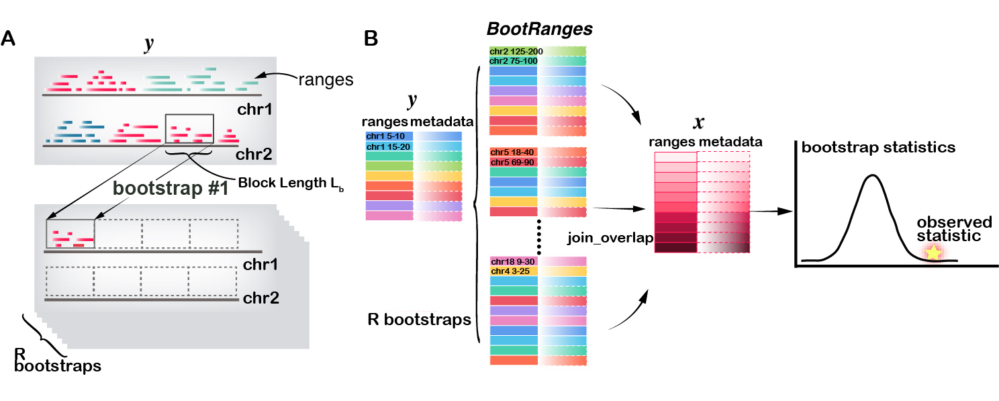
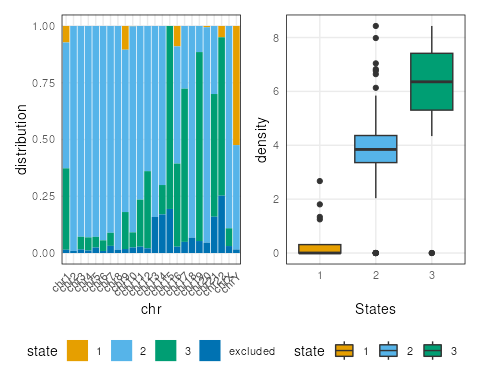
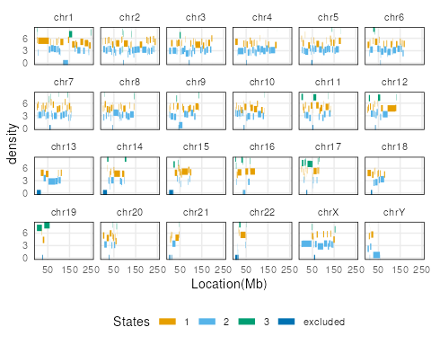
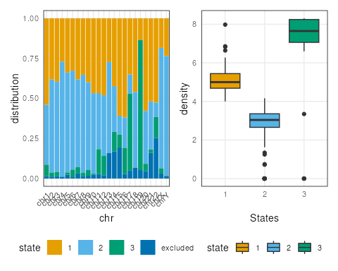
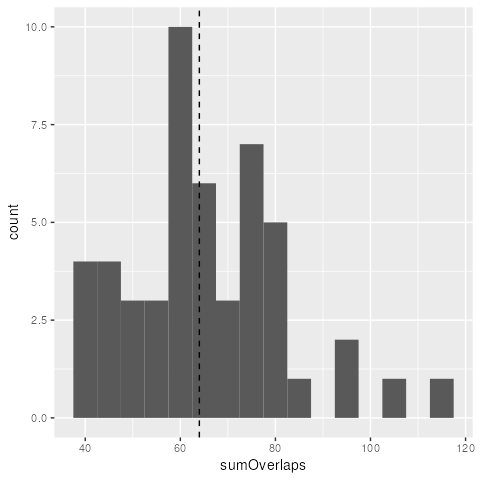
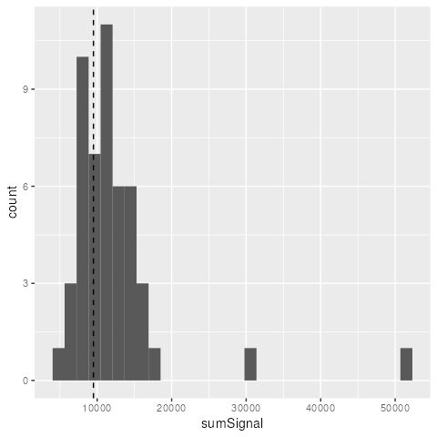
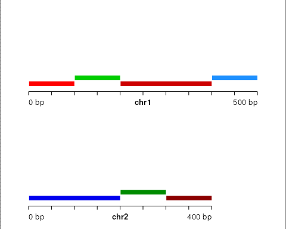
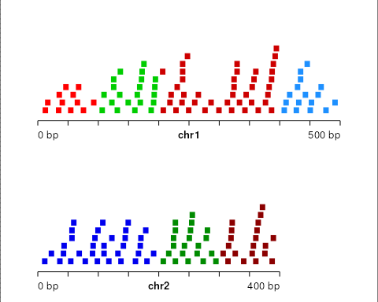
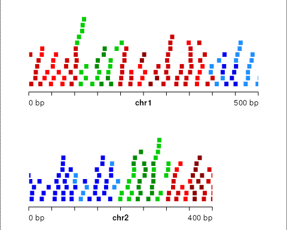
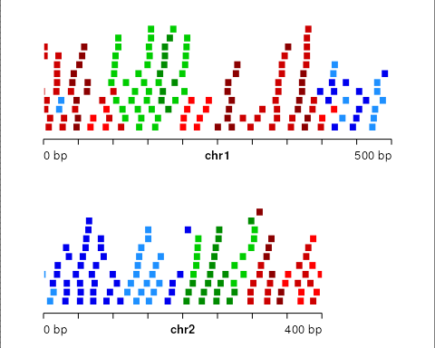

Introduction
In this vignette, we demonstrate the block bootstrap functionality implemented in nullranges. See the main nullranges vignette for an overview of the idea of bootstrapping, or the diagram below.
nullranges contains an implementation of a block bootstrap for genomic data, as proposed by Bickel et al. (2010), such that features (ranges) are sampled from the genome in blocks. The original block bootstrapping algorithm for genomic data is implemented in a python software called Genome Structure Correlation, GSC.
Our description of the bootRanges methods is described in Mu et al. (2023).
Quick start
Minimal code for running bootRanges() is shown below.
Genome segmentation seg and excluded regions
exclude are optional.
eh <- ExperimentHub()
ah <- AnnotationHub()
# some default resources:
seg <- eh[["EH7307"]] # pre-built genome segmentation for hg38
exclude <- ah[["AH107305"]] # Kundaje excluded regions for hg38, see below
set.seed(5) # set seed for reproducibility
blockLength <- 5e5 # size of blocks to bootstrap
R <- 10 # number of iterations of the bootstrap
# input `ranges` require seqlengths, if missing see `GenomeInfoDb::Seqinfo`
seqlengths(ranges)
# next, we remove non-standard chromosomes ...
ranges <- keepStandardChromosomes(ranges, pruning.mode="coarse")
# ... and mitochondrial genome, as these are too short
seqlevels(ranges, pruning.mode="coarse") <- setdiff(seqlevels(ranges), "MT")
# generate bootstraps
boots <- bootRanges(ranges, blockLength=blockLength, R=R,
seg=seg, exclude=exclude)
# `boots` can then be used with plyranges commands, e.g. join_overlap_*The boots object will contain a column,
iter which marks the different bootstrap samples that were
generated. This allows for tidy analysis with plyranges,
e.g. counting the number of overlapping ranges, per bootstrap iteration.
For more examples of combining bootRanges with
plyranges operations, see the tidy ranges
tutorial.
Method overview
Several algorithms are implemented in bootRanges(),
including a segmented and unsegmented version, where in the former,
blocks are sampled with respect to a particular genome segmentation.
Overall, we recommend the segmented block bootstrap given the
heterogeneity of structure across the entire genome. If the purpose is
block bootstrapping ranges within a smaller set of sequences, such as
motifs within transcript sequence, then the unsegmented algorithm would
be sufficient.
In a segmented block bootstrap, the blocks are sampled and placed within regions of a genome segmentation. That is, for a genome segmented into states \(1,2, \dots, S\), only blocks from state s will be used to sample the ranges of state s in each bootstrap sample. The process can be visualized in diagram panel (A) below, where a block with length \(L_b\) is randomly sampled with replacement from state “red” and the features (ranges) that overlap this block are then copied to the first tile (which is in the “red” state). The sampling is allowed across chromosome (as shown here), as long as the two blocks are in the same state.
Note that nullranges provides both functions for generating a genome segmentation from e.g. gene density, described below, as well as a default segmentation for hg38 that can be used directly.
An example workflow of bootRanges() used in combination
with plyranges (Lee, Cook, and Lawrence
2019) is diagrammed in panel (B) below, and can be summarized
as:
- Compute statistics of interest between GRanges of feature \(x\) and GRanges of feature \(y\) to assess association in the original data. This could be an enrichment (amount of overlap) or other possible statistics making use of covariates associated with each range
- Generate bootstrap samples of \(y\):
bootRanges()with optional argumentsseg(segmentation) andexclude(excluded regions as compiled by Ogata et al. (2023)) to create a BootRanges object (\(y'\)) - Compute the bootstrap distribution of test statistics between GRanges of feature \(x\) and \(y'\) using plyranges (compute overlaps of all features in \(x\) with all features in \(y'\), grouping by the bootstrap sample)
- Conpute a bootstrap p-value or \(z\) test to test the null hypothesis that there is no association between \(x\) and \(y\) (e.g. that the bootstrap data often has as high an enrichment as the observed data)

In this vignette, we give an example of segmenting the hg38 genome by
Ensembl gene density, performing bootstrap sampling of peaks ranges, and
evaluating overlaps for observed peaks and bootstrap peaks. We also
provide other examples of statistics that can be computed with the
bootRanges framework, including a single cell multi-omics
example and a special case of bootstrapping features in one region of
the genome.
Proportional blocks: A finally consideration is
whether the blocks used to generate the bootstrap samples should scale
proportionally to the segment state length, with the default setting of
proportionLength=TRUE. When blocks scale proportionally,
blockLength provides the maximal length of a block, while
the actual block length used for a segmentation state is proportional to
the fraction of genomic basepairs covered by that state. It is
theoretically motivated to have the blocks scale with the overall extent
of the segment state. However, in practice, if the genome segmentation
states are very heterogeneous in size (e.g. orders of magnitude
differences), then the blocks constructed via the proportional length
method for the smaller segmentation states can be too short to
effectively capture inter-range distances. We therefore recommend
proportional length blocks unless some segmentation states have a much
smaller extent than others, in which case fixed length blocks can be
used. This option is visualized on toy data at the end of this
vignette.
Segmented block bootstrap
Case study I: DHS
Import excluded regions
To avoid placing bootstrap features into regions of the genome that don’t typically have features, we import excluded regions including ENCODE-produced excludable regions(Amemiya, Kundaje, and Boyle 2019), telomeres from UCSC, centromeres. These, and other excludable sets, are assembled in the excluderanges package (Ogata et al. 2023).
suppressPackageStartupMessages(library(AnnotationHub))
ah <- AnnotationHub()
# hg38.Kundaje.GRCh38_unified_Excludable
exclude_1 <- ah[["AH107305"]]
# hg38.UCSC.centromere
exclude_2 <- ah[["AH107354"]]
# hg38.UCSC.telomere
exclude_3 <- ah[["AH107355"]]
# hg38.UCSC.short_arm
exclude_4 <- ah[["AH107356"]]
# combine them
suppressWarnings({
exclude <- trim(c(exclude_1, exclude_2, exclude_3, exclude_4))
})
exclude <- sort(GenomicRanges::reduce(exclude))Segmentations choices
For most genomic datasets we examine, the density of ranges of interest (e.g. ChIP- or ATAC-seq peaks) is often correlated to other large-scale patterns of other genomic features, such as density of genes. Bickel et al. (2010) therefore proposed the idea of bootstrapping with respect to a segmented genome given known, large-scale genomic structures such as isochores (“larger than 300kb”).
A genomic segmentation can be considered if it defines large (e.g. on the order of ∼1 Mb), relatively homogeneous segments with respect to feature density, and the variance of the distribution of the test statistics become stable as block length increases (see Mu et al. (2023) Fig 2A).
There are two options for choosing a segmentation, either:
- Use an exiting segmentation (e.g. ChromHMM, etc.) downloaded from AnnotationHub or external to Bioconductor (BED files imported with rtracklayer)
- Perform a de novo segmentation of the genome using feature density, e.g. gene density
Pre-built segmentations
Given that these genome segmentation evaluations take time and involve consideration of multiple criteria, we have provided our recommended segmentation for hg38. nullranges has generated pre-built segmentations for easy use, which were generated using code outlined below in the Segmentation by gene density section.
Pre-built segmentations using either CBS or HMM methods with \(L_s=2e6\) considering excludable regions can be downloaded directly from ExperimentHub. We find that the segmentation and block length (500kb) shown in the case study below could be used for most analyses of hg38.
suppressPackageStartupMessages(library(ExperimentHub))
eh <- ExperimentHub()
seg_cbs <- eh[["EH7307"]] # prefer CBS for hg38
seg_hmm <- eh[["EH7308"]]
seg <- seg_cbsSegmentation by gene density
This section describes how we generated the pre-built segmentations, such that users with a different genome can generate a segmentation for their own purposes. First we obtain the Ensembl genes (Howe et al. 2020) for segmenting by gene density. We obtain these using the ensembldb package (Rainer, Gatto, and Weichenberger 2019).
suppressPackageStartupMessages(library(ensembldb))
suppressPackageStartupMessages(library(EnsDb.Hsapiens.v86))
edb <- EnsDb.Hsapiens.v86
filt <- AnnotationFilterList(GeneIdFilter("ENSG", "startsWith"))
g <- genes(edb, filter = filt)We perform some processing to align the sequences (chromosomes) of
g with our excluded regions and our features of interest
(DNase hypersensitive sites, or DHS, defined below).
library(GenomeInfoDb)
g <- keepStandardChromosomes(g, pruning.mode = "coarse")
# MT is too small for bootstrapping, so must be removed
seqlevels(g, pruning.mode="coarse") <- setdiff(seqlevels(g), "MT")
# normally we would assign a new style, but for recent host issues
# that produced vignette build problems, we use `paste0`
## seqlevelsStyle(g) <- "UCSC"
seqlevels(g) <- paste0("chr", seqlevels(g))
genome(g) <- "hg38"
g <- sortSeqlevels(g)
g <- sort(g)
table(seqnames(g))##
## chr1 chr2 chr3 chr4 chr5 chr6 chr7 chr8 chr9 chr10 chr11 chr12 chr13
## 5194 3971 3010 2505 2868 2863 2867 2353 2242 2204 3235 2940 1304
## chr14 chr15 chr16 chr17 chr18 chr19 chr20 chr21 chr22 chrX chrY
## 2224 2152 2511 2995 1170 2926 1386 835 1318 2359 523CBS segmentation
We first demonstrate the use of a CBS segmentation as implemented in DNAcopy (Olshen et al. 2004).
We load the nullranges and plyranges packages, and patchwork in order to produce grids of plots.
library(nullranges)
suppressPackageStartupMessages(library(plyranges))
library(patchwork)We subset the excluded ranges to those which are 500 bp or larger.
The motivation for this step is to avoid segmenting the genome into many
small pieces due to an abundance of short excluded regions. Note that we
re-save the excluded ranges to exclude.
Here, and below, we need to specify plyranges::filter as
it conflicts with filter exported by
ensembldb.
set.seed(5)
exclude <- exclude %>%
plyranges::filter(width(exclude) >= 500)
L_s <- 1e6
seg_cbs <- segmentDensity(g, n = 3, L_s = L_s,
exclude = exclude, type = "cbs")## Analyzing: Sample.1
plots <- lapply(c("ranges","barplot","boxplot"), function(t) {
plotSegment(seg_cbs, exclude, type = t)
})
plots[[1]]
plots[[2]] + plots[[3]]
Note here, the default ranges plot shows the whole genome.
Some of the state transitions within small regions cannot be visualized.
One can look into specific regions to observe segmentation states, by
specifying the region argument.
region <- GRanges("chr16", IRanges(3e7,4e7))
plotSegment(seg_cbs, exclude, type="ranges", region=region)
Alternatively: HMM segmentation
Here we use an alternative segmentation implemented in the
RcppHMM CRAN package, using the initGHMM,
learnEM, and viterbi functions.
seg_hmm <- segmentDensity(g, n = 3, L_s = L_s,
exclude = exclude, type = "hmm")## Finished at Iteration: 127 with Error: 9.70053e-06
plots <- lapply(c("ranges","barplot","boxplot"), function(t) {
plotSegment(seg_hmm, exclude, type = t)
})
plots[[1]]
plots[[2]] + plots[[3]]
Running bootRanges
We use a set of DNase hypersensitivity sites (DHS) from the ENCODE project (ENCODE 2012) in A549 cell line (ENCSR614GWM). Here, for speed, we work with a pre-processed data object from ExperimentHub, created using the following steps:
- Download ENCODE DNase hypersensitive peaks in A549 from AnnotationHub
- Subset to standard chromosomes and remove mitochondrial DNA
- Use a chain file from UCSC to lift ranges from hg19 to hg38
- Sort the DHS features to be bootstrapped
These steps are included in nullrangesData in the
inst/scripts/make-dhs-data.R script.
For speed of the vignette, we restrict to a smaller number of DHS,
filtering by the signal value. We also remove unrelated metadata columns
that we don’t need for the bootstrap analysis. Because we are interested
in signal value for DHS peaks later, we only keep this column. Consider,
when creating bootstrapped data, that you will be creating an object
many times larger than your original data (i.e. multipled by
R the number of bootstrap iterations), so
filtering down to key ranges and
selecting only the relevant metadata can help make the
analysis much more efficient.
suppressPackageStartupMessages(library(nullrangesData))
dhs <- DHSA549Hg38()
dhs <- dhs %>% plyranges::filter(signalValue > 100) %>%
mutate(id = seq_along(.)) %>%
plyranges::select(id, signalValue)
length(dhs)## [1] 6214##
## chr1 chr2 chr3 chr4 chr5 chr6 chr7 chr8 chr9 chr10 chr11 chr12 chr13
## 1436 252 108 30 148 51 184 146 155 443 436 526 20
## chr14 chr15 chr16 chr17 chr18 chr19 chr20 chr21 chr22 chrX chrY
## 197 265 214 715 20 649 142 31 19 17 10Now we apply a segmented block bootstrap with blocks of size 500kb, to the peaks. Here we show generation of 50 iterations of a block bootstrap followed by a typical overlap analysis using plyranges (Lee, Cook, and Lawrence 2019).
Note that we have already removed non-standard chromosomes and
mitochondrial chromosome, as these are typically shorter than our
desired blockLength (see e.g. code in Quick Start
above).
set.seed(5) # for reproducibility
R <- 50
blockLength <- 5e5
boots <- bootRanges(dhs, blockLength, R = R, seg = seg, exclude=exclude)
boots## BootRanges object with 310434 ranges and 3 metadata columns:
## seqnames ranges strand | id signalValue iter
## <Rle> <IRanges> <Rle> | <integer> <numeric> <Rle>
## [1] chr1 242791-242940 * | 347 120 1
## [2] chr1 256031-256180 * | 348 194 1
## [3] chr1 391535-391684 * | 5301 109 1
## [4] chr1 421046-421195 * | 5302 106 1
## [5] chr1 438186-438335 * | 5303 232 1
## ... ... ... ... . ... ... ...
## [310430] chrY 27090908-27091057 * | 2133 105 50
## [310431] chrY 27194968-27195117 * | 2134 128 50
## [310432] chrY 27224188-27224337 * | 2135 153 50
## [310433] chrY 27234153-27234302 * | 2136 125 50
## [310434] chrY 27789879-27790028 * | 2116 118 50
## -------
## seqinfo: 24 sequences from hg38 genomeWhat is returned here? The bootRanges function returns a
BootRanges object, which is a simple sub-class of
GRanges. The iteration (iter) and (optionally) the
block length (blockLength) are recorded as metadata
columns, accessible via mcols. We return the bootstrapped
ranges as GRanges rather than GRangesList, as the
former is more compatible with downstream overlap joins with
plyranges, where the iteration column can be used with
group_by to provide per bootstrap summary statistics, as
shown below.
Note that we use the exclude object from the previous
step, which does not contain small ranges. If one wanted to also avoid
generation of bootstrapped features that overlap small excluded ranges,
then omit this filtering step (use the original, complete
exclude feature set).
Assessing quality of bootstrap samples
We can examine properties of permuted y over iterations, and compare to the original y. To do so, we first add the original features as iter=0. Then compute summaries:
suppressPackageStartupMessages(library(tidyr))
combined <- dhs %>%
mutate(iter=0) %>%
bind_ranges(boots) %>%
plyranges::select(iter)
stats <- combined %>%
group_by(iter) %>%
summarize(n = n()) %>%
as_tibble()
head(stats)## # A tibble: 6 × 2
## iter n
## <fct> <int>
## 1 0 6214
## 2 1 6144
## 3 2 6265
## 4 3 6233
## 5 4 6291
## 6 5 6357We can also look at distributions of various aspects, e.g. here the inter-feature distance of features, across a few of the bootstraps and the original feature set y.
suppressPackageStartupMessages(library(ggridges))
suppressPackageStartupMessages(library(purrr))
suppressPackageStartupMessages(library(ggplot2))
interdist <- function(dat) {
x <- dat[-1,]
y <- dat[-nrow(dat),]
ifelse(x$seqnames == y$seqnames,
x$start + floor((x$width - 1)/2) -
y$start - floor((y$width - 1)/2), NA)
}
# just looking at first 3 iterations...
combined %>% plyranges::filter(iter %in% 0:3) %>%
mutate(iter = droplevels(iter)) %>%
plyranges::select(iter) %>%
as_tibble() %>%
nest(data = !iter) %>%
mutate(interdist = map(data, interdist)) %>%
dplyr::select(iter, interdist) %>%
unnest(interdist) %>%
mutate(type = ifelse(iter == 0, "original", "boot"),
interdist = pmax(interdist, 0)) %>%
filter(!is.na(interdist)) %>%
ggplot(aes(log10(interdist + 1), iter, fill=type)) +
geom_density_ridges(alpha = 0.75) +
geom_text(data = head(stats, 4),
aes(x=1.5, y=iter, label=paste0("n=",n), fill=NULL),
vjust=1.5)
Derive statistics of interest
Suppose we have a set of features x and we are
interested in evaluating the enrichment of this set with the DHS. We can
calculate for example the sum observed number of overlaps for features
in x with DHS in whole genome (or something more
complicated, e.g. the maximum log fold change or signal value for DHS
peaks within a maxgap window of x).
Statistic I: the total number of overlaps
x <- x %>% mutate(n_overlaps = count_overlaps(., dhs))
sum( x$n_overlaps )## [1] 64We can repeat this with the bootstrapped features using a
group_by command, a summarize, followed by a
second group_by and summarize. It may help to
step through these commands one by one to understand what the
intermediate output is.
Note that we need to use tidyr::complete in order to
fill in combinations of x and iter where the
overlap was 0.
boot_stats <- x %>% join_overlap_inner(boots) %>%
group_by(x_id, iter) %>%
summarize(n_overlaps = n()) %>%
as_tibble() %>%
complete(x_id, iter, fill=list(n_overlaps = 0)) %>%
group_by(iter) %>%
summarize(sumOverlaps = sum(n_overlaps))The above code, first grouping by x_id and
iter, then subsequently by iter is general and
allows for more complex analysis than just mean overlap (e.g. how many
times an x range has 1 or more overlap, what is the mean or
max signal value for peaks overlapping ranges in x,
etc.).
If one is interested in assessing feature-wise statistics
instead of genome-wise statistics, eg.,the mean observed number
of overlaps per feature or mean base pair overlap in x, one
can also group by both (block,iter). 10,000
total blocks may therefore be sufficient to derive a bootstrap
distribution, avoiding the need to generate many bootstrap genomes of
data.
Finally we can plot a histogram. In this case, as the x
features were arbitrary, our observed value falls within the
distribution of sum number of overlap bootstrapped peaks with \(x\).
suppressPackageStartupMessages(library(ggplot2))
ggplot(boot_stats, aes(sumOverlaps)) +
geom_histogram(binwidth=5)+
geom_vline(xintercept = sum(x$n_overlaps), linetype = "dashed")
Statistic II: the sum of signal value for nearby peaks
x_obs <- x %>% join_overlap_inner(dhs,maxgap=1e3)
sum(x_obs$signalValue )## [1] 9503
boot_stats <- x %>% join_overlap_inner(boots,maxgap=1e3) %>%
group_by(x_id, iter) %>%
summarize(Signal = sum(signalValue)) %>%
as_tibble() %>%
complete(x_id, iter, fill=list(Signal = 0)) %>%
group_by(iter) %>%
summarize(sumSignal = sum(Signal))Still in this case, our observed value falls within the distribution of bootstrapped statistics.
ggplot(boot_stats, aes(sumSignal)) +
geom_histogram()+
geom_vline(xintercept = sum(x_obs$signalValue), linetype = "dashed")
Case study II: Single cell multi-omics
This case study provides an example of a more complex statistic of
interest. Instead of computing simple overlap, or some function of a
single metadata column, e.g. signal above, a statistic can
be computed on a count matrix from a SummerizedExperiment or
SingleCellExperiment. Here we provide unevaluated code for such
an example.
We use a trick to perform computation on a count matrix within
plyranges: we extract count matrix data from a
SingleCellExperiment (e.g. pseudobulk summaries of cell type
specific expression or accessibility) and save it in a GRanges’s
metadata column as a NumericList() format. This allows us
to perform the block bootstrap and quickly compute statistics using
plyranges. The case study we consider here is to assess the
correlation of gene expression and promoter peak accessibility from a
dataset of Chromium Single Cell Multiome ATAC + Gene Expression.
We first load the 10X Multiome
data, as compiled by the MOFA2 tutorial. The first two pre-processed
steps are included in nullrangesData in the
inst/scripts/make-multiome-data.R script. Here, we
aggregate 14 cell types across cluster-sample groups.
## split sparse count matrix into NumericList
# sc_rna <- rna_Granges[-which(rna.sd==0)] %>%
# mutate(counts1 = NumericList(asplit(rna.scaled, 1))) %>% sort()
# sc_promoter <- promoter_Granges[-which(promoter.sd==0)] %>%
# mutate(counts2 = NumericList(asplit(promoter.scaled, 1))) %>% sort()
suppressPackageStartupMessages(library(nullrangesData))
data("sc_rna")
sc_rna
sc_rna$counts1
nct <- length(sc_rna$counts1[[1]])
print(paste("There are", nct, "cell types"))
data("sc_promoter")
## bootstrap promoters
library(BSgenome.Hsapiens.UCSC.hg38)
genome <- BSgenome.Hsapiens.UCSC.hg38
seqlengths(sc_promoter) <- seqlengths(genome)[1:22] # pull chrom lens from USCS
bootranges <- bootRanges(sc_promoter, blockLength = 5e5, R=50)There are two options for downstream pipelines for computing statistics after generating a BootRanges object. One is to use plyranges in downstream analysis as in the previous sections, while another is to create a tidySummarizedExperiment object used to compute the statistics of interest.
Plyranges
We can compute the mean correlation of the all pairs of genes and promoter peaks over all bootstrap iterations and compare to the observed statistic. The histogram will show that our observed value falls far from the distribution of bootstrapped statistics, as we expected for this dataset.
cor_gr <- sc_rna %>% join_overlap_inner(sc_promoter, maxgap=1000) %>%
mutate(rho = 1/(nct-1) * sum(counts1 * counts2)) %>%
summarise(meanCor = mean(rho))
## mean correlation distribution
cor_boot <- sc_rna %>%
join_overlap_inner(bootranges, maxgap=1000) %>%
# vectorized code are 10 times faster than cor(counts1, counts2) for plyranges pipeline
mutate(rho = 1/(nct-1) * sum(counts1 * counts2)) %>%
select(rho, iter) %>%
group_by(iter) %>%
summarise(meanCor = mean(rho)) %>%
as.data.frame()
ggplot(cor_boot, aes(meanCor)) +
geom_histogram(binwidth=0.01)+
geom_vline(xintercept = cor_gr$meanCor,linetype = "dashed")+
theme_classic()If one is interested in assessing the significance of gene-promoter
pairs per gene, one can also use plyranges::select
(gene, peak, rho) and
plyranges::group_by gene.
tidySummarizedExperiment
In order to use tidySummarizedExperiment to compute the same operation, we first must create an RangedSE for each modality, and then we can find the overlaps..
library(tidySummarizedExperiment)
library(purrr)
# make an SE where each row is an overlap
makeOverlapSE <- function(se_rna, se_promoter) {
idx <- rowRanges(se_rna) %>% join_overlap_inner(rowRanges(se_promoter),maxgap = 1000)
assay_x <- assay(se_rna, "rna")[ idx$gene, ]
assay_y <- assay(se_promoter, "promoter")[ idx$peak, ]
# this is needed to build the SE
rownames(assay_x) <- rownames(assay_y) <- seq_along( idx$gene )
names(idx) <- seq_along( idx$gene )
SummarizedExperiment(
assays=list(x=assay_x, y=assay_y),
rowRanges=idx
)
}
# create SE for observed data
se_rna <- SummarizedExperiment(
assays=list(rna=do.call(rbind,sc_rna$counts1)),
rowRanges=sc_rna)
se_promoter <- SummarizedExperiment(
assays=list(promoter=do.call(rbind,sc_promoter$counts2)),
rowRanges=sc_promoter)
se <- makeOverlapSE(se_rna, se_promoter)
se <- se %>%
as_tibble() %>%
nest(data = -.feature) %>%
mutate(rho = map(data,
function(data) data %>% summarize(rho = cor(x, y))
)) %>%
unnest(rho) %>%
select(-data)
print(paste("mean correlation is", mean(se$rho)))Repeating for the bootstrapping case
# create SE for bootranges data
se_promoter_boots <- SummarizedExperiment(
assays=list(promoter=do.call(rbind,bootranges$counts2)),
rowRanges=bootranges)
se_boots <- makeOverlapSE(se_rna, se_promoter_boots)
se_boots <- se_boots %>%
as_tibble() %>%
nest(data = -c(.feature,iter)) %>%
# vectorized code similar to cor(counts1, counts2) for tidySE pipeline
mutate(rho = map(data,
function(data) data %>% summarize(rho = cor(x, y))
)) %>%
unnest(rho) %>%
select(-data)
cor_boot <- se_boots %>% group_by(iter) %>%
summarise(meanCor = mean(rho))
ggplot(cor_boot, aes(meanCor)) +
geom_histogram(binwidth=0.01)+
geom_vline(xintercept = mean(se$rho),linetype = "dashed")+
theme_classic()For more examples of combining bootRanges from
nullranges with plyranges piped operations, see the
relevant chapter in the tidy-ranges-tutorial
book.
Case study III: Block bootstrap one region
Generally, it makes sense to block bootstrap the entire genome at once. This is motivated by the “tidy analysis” paradigm where loops are avoided by stacking data into a longer format. This makes computation more efficient in our case (as a single overlap call can be made with all regions of interest at once, across multiple bootstrap iterations), and it also can simplify code and avoid repetition.
However, in some cases, there is a single region of interest, and it is desired to generate bootstrap data within this one region. For this, we have a convenience function that enables bootstrap computation.
Suppose we have data in the following region of chromosome 1:
suppressPackageStartupMessages(library(nullrangesData))
dhs <- DHSA549Hg38()
region <- GRanges("chr1", IRanges(10e6 + 1, width=1e6))
x <- GRanges("chr1", IRanges(10e6 + 0:9 * 1e5 + 1, width=1e4))
y <- dhs %>% filter_by_overlaps(region) %>% select(NULL)
x %>% mutate(num_overlaps = count_overlaps(., y))## GRanges object with 10 ranges and 1 metadata column:
## seqnames ranges strand | num_overlaps
## <Rle> <IRanges> <Rle> | <integer>
## [1] chr1 10000001-10010000 * | 0
## [2] chr1 10100001-10110000 * | 2
## [3] chr1 10200001-10210000 * | 1
## [4] chr1 10300001-10310000 * | 0
## [5] chr1 10400001-10410000 * | 5
## [6] chr1 10500001-10510000 * | 2
## [7] chr1 10600001-10610000 * | 0
## [8] chr1 10700001-10710000 * | 0
## [9] chr1 10800001-10810000 * | 1
## [10] chr1 10900001-10910000 * | 1
## -------
## seqinfo: 1 sequence from an unspecified genome; no seqlengthsWe can easily bootstrap data just in this region using the following code:
seg <- oneRegionSegment(region, seqlength=248956422)
y <- keepSeqlevels(y, "chr1")
set.seed(1)
boot <- bootRanges(y, blockLength=1e5, R=1, seg=seg,
proportionLength=FALSE)
boot## BootRanges object with 83 ranges and 1 metadata column:
## seqnames ranges strand | iter
## <Rle> <IRanges> <Rle> | <Rle>
## [1] chr1 10001821-10001970 * | 1
## [2] chr1 10002381-10002530 * | 1
## [3] chr1 10003041-10003190 * | 1
## [4] chr1 10003536-10003685 * | 1
## [5] chr1 10004001-10004150 * | 1
## ... ... ... ... . ...
## [79] chr1 10918882-10919031 * | 1
## [80] chr1 10953082-10953231 * | 1
## [81] chr1 10961702-10961851 * | 1
## [82] chr1 10993742-10993891 * | 1
## [83] chr1 10995862-10996011 * | 1
## -------
## seqinfo: 1 sequence from hg38 genome
x %>% mutate(num_overlaps = count_overlaps(., boot))## GRanges object with 10 ranges and 1 metadata column:
## seqnames ranges strand | num_overlaps
## <Rle> <IRanges> <Rle> | <integer>
## [1] chr1 10000001-10010000 * | 5
## [2] chr1 10100001-10110000 * | 0
## [3] chr1 10200001-10210000 * | 1
## [4] chr1 10300001-10310000 * | 5
## [5] chr1 10400001-10410000 * | 1
## [6] chr1 10500001-10510000 * | 0
## [7] chr1 10600001-10610000 * | 5
## [8] chr1 10700001-10710000 * | 0
## [9] chr1 10800001-10810000 * | 5
## [10] chr1 10900001-10910000 * | 0
## -------
## seqinfo: 1 sequence from an unspecified genome; no seqlengthsHere it is important to use proportionLength=FALSE so
that the blocks will be of the size specified and not smaller (they
would otherwise be scaled down proportional to the fraction of
region compared to the chromosome).
Visualizing bootstrap types
Below we present a toy example for visualizing the segmented block bootstrap. First, we define a helper function for plotting GRanges using plotgardener (Kramer et al. 2022). A key aspect here is that we color the original and bootstrapped ranges by the genomic state (the state of the segmentation that the original ranges fall in).
suppressPackageStartupMessages(library(plotgardener))
my_palette <- function(n) {
head(c("red","green3","red3","dodgerblue",
"blue2","green4","darkred"), n)
}
plotGRanges <- function(gr) {
pageCreate(width = 5, height = 5, xgrid = 0,
ygrid = 0, showGuides = TRUE)
for (i in seq_along(seqlevels(gr))) {
chrom <- seqlevels(gr)[i]
chromend <- seqlengths(gr)[[chrom]]
suppressMessages({
p <- pgParams(chromstart = 0, chromend = chromend,
x = 0.5, width = 4*chromend/500, height = 2,
at = seq(0, chromend, 50),
fill = colorby("state_col", palette=my_palette))
prngs <- plotRanges(data = gr, params = p,
chrom = chrom,
y = 2 * i,
just = c("left", "bottom"))
annoGenomeLabel(plot = prngs, params = p, y = 0.1 + 2 * i)
})
}
}Create a toy genome segmentation:
library(GenomicRanges)
seq_nms <- rep(c("chr1","chr2"), c(4,3))
seg <- GRanges(
seqnames = seq_nms,
IRanges(start = c(1, 101, 201, 401, 1, 201, 301),
width = c(100, 100, 200, 100, 200, 100, 100)),
seqlengths=c(chr1=500,chr2=400),
state = c(1,2,1,3,3,2,1),
state_col = factor(1:7)
)We can visualize with our helper function:
plotGRanges(seg)
Now create small ranges distributed uniformly across the toy genome:
set.seed(1)
n <- 200
gr <- GRanges(
seqnames=sort(sample(c("chr1","chr2"), n, TRUE)),
IRanges(start=round(runif(n, 1, 500-10+1)), width=10)
)
suppressWarnings({
seqlengths(gr) <- seqlengths(seg)
})
gr <- gr[!(seqnames(gr) == "chr2" & end(gr) > 400)]
gr <- sort(gr)
idx <- findOverlaps(gr, seg, type="within", select="first")
gr <- gr[!is.na(idx)]
idx <- idx[!is.na(idx)]
gr$state <- seg$state[idx]
gr$state_col <- factor(seg$state_col[idx])
plotGRanges(gr)
Scaling vs. not scaling by segment length
We can visualize block bootstrapped ranges when the blocks do not scale to segment state length:
set.seed(1)
gr_prime <- bootRanges(gr, blockLength = 25, seg = seg,
proportionLength = FALSE)
plotGRanges(gr_prime)
This time the blocks scale to the segment state length. Note that in
this case blockLength is the maximal block length
possible, but the actual block lengths per segment will be smaller
(proportional to the fraction of basepairs covered by that state in the
genome segmentation).
set.seed(1)
gr_prime <- bootRanges(gr, blockLength = 50, seg = seg,
proportionLength = TRUE)
plotGRanges(gr_prime)
Note that some ranges from adjacent states are allowed to be placed within different states in the bootstrap sample. This is because, during the random sampling of blocks of original data, a block is allowed to extend beyond the segmentation region of the state being sampled, and features from adjacent states are not excluded from the sampled block.
Session information
## R version 4.3.0 (2023-04-21)
## Platform: x86_64-pc-linux-gnu (64-bit)
## Running under: Ubuntu 22.04.2 LTS
##
## Matrix products: default
## BLAS: /usr/lib/x86_64-linux-gnu/openblas-pthread/libblas.so.3
## LAPACK: /usr/lib/x86_64-linux-gnu/openblas-pthread/libopenblasp-r0.3.20.so; LAPACK version 3.10.0
##
## locale:
## [1] LC_CTYPE=en_US.UTF-8 LC_NUMERIC=C
## [3] LC_TIME=en_US.UTF-8 LC_COLLATE=en_US.UTF-8
## [5] LC_MONETARY=en_US.UTF-8 LC_MESSAGES=en_US.UTF-8
## [7] LC_PAPER=en_US.UTF-8 LC_NAME=C
## [9] LC_ADDRESS=C LC_TELEPHONE=C
## [11] LC_MEASUREMENT=en_US.UTF-8 LC_IDENTIFICATION=C
##
## time zone: UTC
## tzcode source: system (glibc)
##
## attached base packages:
## [1] stats4 stats graphics grDevices utils datasets methods
## [8] base
##
## other attached packages:
## [1] plotgardener_1.6.0 ggplot2_3.4.2
## [3] purrr_1.0.1 ggridges_0.5.4
## [5] tidyr_1.3.0 patchwork_1.1.2
## [7] plyranges_1.20.0 nullranges_1.7.6
## [9] EnsDb.Hsapiens.v86_2.99.0 ensembldb_2.24.0
## [11] AnnotationFilter_1.24.0 GenomicFeatures_1.52.0
## [13] AnnotationDbi_1.62.1 nullrangesData_1.6.0
## [15] InteractionSet_1.28.1 SummarizedExperiment_1.30.2
## [17] Biobase_2.60.0 MatrixGenerics_1.12.2
## [19] matrixStats_1.0.0 ExperimentHub_2.8.0
## [21] GenomicRanges_1.52.0 GenomeInfoDb_1.36.1
## [23] IRanges_2.34.0 S4Vectors_0.38.1
## [25] AnnotationHub_3.8.0 BiocFileCache_2.8.0
## [27] dbplyr_2.3.2 BiocGenerics_0.46.0
##
## loaded via a namespace (and not attached):
## [1] strawr_0.0.91 RColorBrewer_1.1-3
## [3] jsonlite_1.8.5 magrittr_2.0.3
## [5] farver_2.1.1 rmarkdown_2.22
## [7] fs_1.6.2 BiocIO_1.10.0
## [9] zlibbioc_1.46.0 ragg_1.2.5
## [11] vctrs_0.6.3 memoise_2.0.1
## [13] Rsamtools_2.16.0 RCurl_1.98-1.12
## [15] htmltools_0.5.5 S4Arrays_1.0.4
## [17] progress_1.2.2 curl_5.0.1
## [19] gridGraphics_0.5-1 sass_0.4.6
## [21] bslib_0.5.0 desc_1.4.2
## [23] cachem_1.0.8 GenomicAlignments_1.36.0
## [25] mime_0.12 lifecycle_1.0.3
## [27] pkgconfig_2.0.3 Matrix_1.5-4.1
## [29] R6_2.5.1 fastmap_1.1.1
## [31] GenomeInfoDbData_1.2.10 shiny_1.7.4
## [33] digest_0.6.31 colorspace_2.1-0
## [35] rprojroot_2.0.3 textshaping_0.3.6
## [37] RSQLite_2.3.1 filelock_1.0.2
## [39] labeling_0.4.2 fansi_1.0.4
## [41] httr_1.4.6 compiler_4.3.0
## [43] bit64_4.0.5 withr_2.5.0
## [45] BiocParallel_1.34.2 DBI_1.1.3
## [47] highr_0.10 biomaRt_2.56.1
## [49] rappdirs_0.3.3 DelayedArray_0.26.3
## [51] rjson_0.2.21 DNAcopy_1.74.1
## [53] tools_4.3.0 interactiveDisplayBase_1.38.0
## [55] httpuv_1.6.11 glue_1.6.2
## [57] restfulr_0.0.15 promises_1.2.0.1
## [59] grid_4.3.0 generics_0.1.3
## [61] gtable_0.3.3 data.table_1.14.8
## [63] hms_1.1.3 xml2_1.3.4
## [65] utf8_1.2.3 XVector_0.40.0
## [67] BiocVersion_3.17.1 pillar_1.9.0
## [69] stringr_1.5.0 yulab.utils_0.0.6
## [71] later_1.3.1 dplyr_1.1.2
## [73] lattice_0.21-8 rtracklayer_1.60.0
## [75] bit_4.0.5 tidyselect_1.2.0
## [77] Biostrings_2.68.1 knitr_1.43
## [79] ProtGenerics_1.32.0 xfun_0.39
## [81] stringi_1.7.12 lazyeval_0.2.2
## [83] yaml_2.3.7 evaluate_0.21
## [85] codetools_0.2-19 tibble_3.2.1
## [87] BiocManager_1.30.21 ggplotify_0.1.0
## [89] cli_3.6.1 xtable_1.8-4
## [91] systemfonts_1.0.4 munsell_0.5.0
## [93] jquerylib_0.1.4 Rcpp_1.0.10
## [95] png_0.1-8 XML_3.99-0.14
## [97] parallel_4.3.0 ellipsis_0.3.2
## [99] pkgdown_2.0.7 blob_1.2.4
## [101] prettyunits_1.1.1 bitops_1.0-7
## [103] scales_1.2.1 crayon_1.5.2
## [105] RcppHMM_1.2.2 rlang_1.1.1
## [107] KEGGREST_1.40.0